# Setup
library(RUBer)
# Attempts to register RubFlama font family, if that fails,
# registers system dependent font for the alias "sans" instead.
# This font family will be used as a parameter for all plots.
font_family <- RUBer::register_font_df()
#> Warning: ✖ Font file "RubFlama-Regular.ttf" could not be found
#> ℹ Using fallback font "DejaVuSans" instead
#> This warning is displayed once per session.
# Required to use custom fonts
showtext::showtext_auto()
options(max.print = 1000)
font_family
#> [1] "DejaVu Sans"
sysfonts::font_families()
#> [1] "sans" "serif" "mono" "wqy-microhei" "DejaVu Sans"
print(systemfonts::system_fonts() %>% dplyr::select(1:5), n = 500)
#> # A tibble: 162 × 5
#> path index name family style
#> <chr> <int> <chr> <chr> <chr>
#> 1 /usr/share/fonts/type1/urw-base35/URWGothic-BookOb… 0 URWG… URW G… Book…
#> 2 /usr/share/fonts/truetype/lato/Lato-ThinItalic.ttf 0 Lato… Lato Thin…
#> 3 /usr/share/fonts/truetype/liberation/LiberationSan… 0 Libe… Liber… Bold
#> 4 /usr/share/fonts/truetype/lato/Lato-SemiboldItalic… 0 Lato… Lato Semi…
#> 5 /usr/share/fonts/type1/urw-base35/NimbusMonoPS-Bol… 0 Nimb… Nimbu… Bold…
#> 6 /usr/share/fonts/truetype/liberation/LiberationMon… 0 Libe… Liber… Bold
#> 7 /usr/share/fonts/opentype/urw-base35/NimbusRoman-B… 0 Nimb… Nimbu… Bold…
#> 8 /usr/share/fonts/type1/urw-base35/NimbusRoman-Regu… 0 Nimb… Nimbu… Regu…
#> 9 /usr/share/fonts/truetype/lato/Lato-MediumItalic.t… 0 Lato… Lato Medi…
#> 10 /usr/share/fonts/type1/urw-base35/NimbusRoman-Ital… 0 Nimb… Nimbu… Ital…
#> 11 /usr/share/fonts/type1/urw-base35/NimbusSansNarrow… 0 Nimb… Nimbu… Bold…
#> 12 /usr/share/fonts/type1/urw-base35/D050000L.t1 0 D050… D0500… Regu…
#> 13 /usr/share/fonts/X11/Type1/P052-BoldItalic.pfb 0 P052… P052 Bold…
#> 14 /usr/share/fonts/opentype/urw-base35/NimbusMonoPS-… 0 Nimb… Nimbu… Regu…
#> 15 /usr/share/fonts/opentype/urw-base35/URWBookman-De… 0 URWB… URW B… Demi…
#> 16 /usr/share/fonts/opentype/urw-base35/URWGothic-Boo… 0 URWG… URW G… Book
#> 17 /usr/share/fonts/opentype/urw-base35/NimbusSans-It… 0 Nimb… Nimbu… Ital…
#> 18 /usr/share/fonts/truetype/dejavu/DejaVuSerif-Itali… 0 Deja… DejaV… Ital…
#> 19 /usr/share/fonts/X11/Type1/URWBookman-DemiItalic.p… 0 URWB… URW B… Demi…
#> 20 /usr/share/fonts/X11/Type1/P052-Bold.pfb 0 P052… P052 Bold
#> 21 /usr/share/fonts/truetype/liberation/LiberationMon… 0 Libe… Liber… Ital…
#> 22 /usr/share/fonts/truetype/dejavu/DejaVuSansCondens… 0 Deja… DejaV… Cond…
#> 23 /usr/share/fonts/X11/Type1/NimbusSans-Regular.pfb 0 Nimb… Nimbu… Regu…
#> 24 /usr/share/fonts/X11/Type1/NimbusRoman-BoldItalic.… 0 Nimb… Nimbu… Bold…
#> 25 /usr/share/fonts/X11/Type1/Z003-MediumItalic.pfb 0 Z003… Z003 Medi…
#> 26 /usr/share/fonts/truetype/liberation/LiberationSer… 0 Libe… Liber… Bold
#> 27 /usr/share/fonts/truetype/dejavu/DejaVuSans.ttf 0 Deja… DejaV… Book
#> 28 /usr/share/fonts/opentype/urw-base35/NimbusSansNar… 0 Nimb… Nimbu… Regu…
#> 29 /usr/share/fonts/X11/Type1/NimbusRoman-Bold.pfb 0 Nimb… Nimbu… Bold
#> 30 /usr/share/fonts/type1/urw-base35/C059-BdIta.t1 0 C059… C059 Bold…
#> 31 /usr/share/fonts/X11/Type1/NimbusSans-BoldItalic.p… 0 Nimb… Nimbu… Bold…
#> 32 /usr/share/fonts/truetype/lato/Lato-BlackItalic.ttf 0 Lato… Lato Blac…
#> 33 /usr/share/fonts/truetype/lato/Lato-Medium.ttf 0 Lato… Lato Medi…
#> 34 /usr/share/fonts/X11/Type1/C059-Italic.pfb 0 C059… C059 Ital…
#> 35 /usr/share/fonts/opentype/urw-base35/C059-Roman.otf 0 C059… C059 Roman
#> 36 /usr/share/fonts/truetype/liberation/LiberationSer… 0 Libe… Liber… Bold…
#> 37 /usr/share/fonts/type1/urw-base35/StandardSymbolsP… 0 Stan… Stand… Regu…
#> 38 /usr/share/fonts/opentype/urw-base35/NimbusSansNar… 0 Nimb… Nimbu… Bold
#> 39 /usr/share/fonts/opentype/urw-base35/NimbusSansNar… 0 Nimb… Nimbu… Obli…
#> 40 /usr/share/fonts/truetype/lato/Lato-Bold.ttf 0 Lato… Lato Bold
#> 41 /usr/share/fonts/truetype/dejavu/DejaVuSerif-Bold.… 0 Deja… DejaV… Bold
#> 42 /usr/share/fonts/truetype/dejavu/DejaVuSansCondens… 0 Deja… DejaV… Cond…
#> 43 /usr/share/fonts/truetype/liberation/LiberationSer… 0 Libe… Liber… Ital…
#> 44 /usr/share/fonts/X11/Type1/P052-Italic.pfb 0 P052… P052 Ital…
#> 45 /usr/share/fonts/truetype/liberation/LiberationSan… 0 Libe… Liber… Ital…
#> 46 /usr/share/fonts/X11/Type1/StandardSymbolsPS.pfb 0 Stan… Stand… Regu…
#> 47 /usr/share/fonts/opentype/urw-base35/P052-Italic.o… 0 P052… P052 Ital…
#> 48 /usr/share/fonts/X11/Type1/URWGothic-Demi.pfb 0 URWG… URW G… Demi
#> 49 /usr/share/fonts/X11/Type1/C059-BdIta.pfb 0 C059… C059 Bold…
#> 50 /usr/share/fonts/opentype/urw-base35/NimbusRoman-R… 0 Nimb… Nimbu… Regu…
#> 51 /usr/share/fonts/truetype/liberation/LiberationSan… 0 Libe… Liber… Regu…
#> 52 /usr/share/fonts/truetype/noto/NotoMono-Regular.ttf 0 Noto… Noto … Regu…
#> 53 /usr/share/fonts/truetype/dejavu/DejaVuSansMono.ttf 0 Deja… DejaV… Book
#> 54 /usr/share/fonts/truetype/lato/Lato-Black.ttf 0 Lato… Lato Black
#> 55 /usr/share/fonts/type1/urw-base35/C059-Roman.t1 0 C059… C059 Roman
#> 56 /usr/share/fonts/X11/Type1/NimbusMonoPS-Italic.pfb 0 Nimb… Nimbu… Ital…
#> 57 /usr/share/fonts/truetype/noto/NotoSansMono-Regula… 0 Noto… Noto … Regu…
#> 58 /usr/share/fonts/truetype/droid/DroidSansFallbackF… 0 Droi… Droid… Regu…
#> 59 /usr/share/fonts/opentype/urw-base35/NimbusSansNar… 0 Nimb… Nimbu… Bold…
#> 60 /usr/share/fonts/opentype/urw-base35/URWGothic-Dem… 0 URWG… URW G… Demi…
#> 61 /usr/share/fonts/truetype/dejavu/DejaVuSansCondens… 0 Deja… DejaV… Cond…
#> 62 /usr/share/fonts/truetype/dejavu/DejaVuSansMono-Bo… 0 Deja… DejaV… Bold…
#> 63 /usr/share/fonts/truetype/dejavu/DejaVuSerifConden… 0 Deja… DejaV… Cond…
#> 64 /usr/share/fonts/opentype/urw-base35/P052-Roman.otf 0 P052… P052 Roman
#> 65 /usr/share/fonts/truetype/lato/Lato-Hairline.ttf 0 Lato… Lato Hair…
#> 66 /usr/share/fonts/type1/urw-base35/URWBookman-Demi.… 0 URWB… URW B… Demi
#> 67 /usr/share/fonts/truetype/noto/NotoColorEmoji.ttf 0 Noto… Noto … Regu…
#> 68 /usr/share/fonts/truetype/dejavu/DejaVuSansMono-Bo… 0 Deja… DejaV… Bold
#> 69 /usr/share/fonts/X11/Type1/NimbusMonoPS-BoldItalic… 0 Nimb… Nimbu… Bold…
#> 70 /usr/share/fonts/type1/urw-base35/NimbusMonoPS-Reg… 0 Nimb… Nimbu… Regu…
#> 71 /usr/share/fonts/opentype/urw-base35/URWGothic-Dem… 0 URWG… URW G… Demi
#> 72 /usr/share/fonts/X11/Type1/URWGothic-Book.pfb 0 URWG… URW G… Book
#> 73 /usr/share/fonts/truetype/lato/Lato-Thin.ttf 0 Lato… Lato Thin
#> 74 /usr/share/fonts/type1/urw-base35/URWBookman-DemiI… 0 URWB… URW B… Demi…
#> 75 /usr/share/fonts/truetype/dejavu/DejaVuSans-BoldOb… 0 Deja… DejaV… Bold…
#> 76 /usr/share/fonts/type1/urw-base35/NimbusSans-Itali… 0 Nimb… Nimbu… Ital…
#> 77 /usr/share/fonts/X11/Type1/NimbusRoman-Italic.pfb 0 Nimb… Nimbu… Ital…
#> 78 /usr/share/fonts/truetype/liberation/LiberationSan… 0 Libe… Liber… Bold…
#> 79 /usr/share/fonts/X11/Type1/NimbusSansNarrow-Obliqu… 0 Nimb… Nimbu… Obli…
#> 80 /usr/share/fonts/truetype/dejavu/DejaVuSans-Bold.t… 0 Deja… DejaV… Bold
#> 81 /usr/share/fonts/opentype/urw-base35/URWBookman-Li… 0 URWB… URW B… Ligh…
#> 82 /usr/share/fonts/truetype/dejavu/DejaVuSans-ExtraL… 0 Deja… DejaV… Extr…
#> 83 /usr/share/fonts/truetype/lato/Lato-Semibold.ttf 0 Lato… Lato Semi…
#> 84 /usr/share/fonts/X11/Type1/P052-Roman.pfb 0 P052… P052 Roman
#> 85 /usr/share/fonts/X11/Type1/D050000L.pfb 0 D050… D0500… Regu…
#> 86 /usr/share/fonts/truetype/dejavu/DejaVuSans-Obliqu… 0 Deja… DejaV… Obli…
#> 87 /usr/share/fonts/X11/Type1/NimbusMonoPS-Bold.pfb 0 Nimb… Nimbu… Bold
#> 88 /usr/share/fonts/truetype/liberation/LiberationMon… 0 Libe… Liber… Bold…
#> 89 /usr/share/fonts/type1/urw-base35/NimbusRoman-Bold… 0 Nimb… Nimbu… Bold…
#> 90 /usr/share/fonts/type1/urw-base35/URWBookman-Light… 0 URWB… URW B… Ligh…
#> 91 /usr/share/fonts/truetype/dejavu/DejaVuSansMono-Ob… 0 Deja… DejaV… Obli…
#> 92 /usr/share/fonts/type1/urw-base35/C059-Italic.t1 0 C059… C059 Ital…
#> 93 /usr/share/fonts/opentype/urw-base35/C059-Italic.o… 0 C059… C059 Ital…
#> 94 /usr/share/fonts/type1/urw-base35/URWGothic-Demi.t1 0 URWG… URW G… Demi
#> 95 /usr/share/fonts/truetype/lato/Lato-BoldItalic.ttf 0 Lato… Lato Bold…
#> 96 /usr/share/fonts/X11/Type1/C059-Roman.pfb 0 C059… C059 Roman
#> 97 /usr/share/fonts/X11/Type1/URWBookman-Light.pfb 0 URWB… URW B… Light
#> 98 /usr/share/fonts/truetype/dejavu/DejaVuSansCondens… 0 Deja… DejaV… Cond…
#> 99 /usr/share/fonts/opentype/urw-base35/NimbusMonoPS-… 0 Nimb… Nimbu… Bold…
#> 100 /usr/share/fonts/opentype/urw-base35/C059-BdIta.otf 0 C059… C059 Bold…
#> 101 /usr/share/fonts/type1/urw-base35/NimbusSansNarrow… 0 Nimb… Nimbu… Obli…
#> 102 /usr/share/fonts/type1/urw-base35/NimbusMonoPS-Bol… 0 Nimb… Nimbu… Bold
#> 103 /usr/share/fonts/opentype/urw-base35/NimbusRoman-B… 0 Nimb… Nimbu… Bold
#> 104 /usr/share/fonts/truetype/dejavu/DejaVuMathTeXGyre… 0 Deja… DejaV… Regu…
#> 105 /usr/share/fonts/truetype/dejavu/DejaVuSerif.ttf 0 Deja… DejaV… Book
#> 106 /usr/share/fonts/X11/Type1/NimbusSansNarrow-Regula… 0 Nimb… Nimbu… Regu…
#> 107 /usr/share/fonts/truetype/dejavu/DejaVuSerifConden… 0 Deja… DejaV… Cond…
#> 108 /usr/share/fonts/type1/urw-base35/URWGothic-Book.t1 0 URWG… URW G… Book
#> 109 /usr/share/fonts/opentype/urw-base35/URWBookman-Li… 0 URWB… URW B… Light
#> 110 /usr/share/fonts/X11/Type1/URWBookman-LightItalic.… 0 URWB… URW B… Ligh…
#> 111 /usr/share/fonts/type1/urw-base35/NimbusSansNarrow… 0 Nimb… Nimbu… Regu…
#> 112 /usr/share/fonts/truetype/liberation/LiberationSer… 0 Libe… Liber… Regu…
#> 113 /usr/share/fonts/X11/Type1/C059-Bold.pfb 0 C059… C059 Bold
#> 114 /usr/share/fonts/type1/urw-base35/NimbusSans-BoldI… 0 Nimb… Nimbu… Bold…
#> 115 /usr/share/fonts/opentype/urw-base35/P052-BoldItal… 0 P052… P052 Bold…
#> 116 /usr/share/fonts/type1/urw-base35/P052-Roman.t1 0 P052… P052 Roman
#> 117 /usr/share/fonts/type1/urw-base35/P052-BoldItalic.… 0 P052… P052 Bold…
#> 118 /usr/share/fonts/opentype/urw-base35/NimbusSans-Re… 0 Nimb… Nimbu… Regu…
#> 119 /usr/share/fonts/opentype/urw-base35/NimbusSans-Bo… 0 Nimb… Nimbu… Bold…
#> 120 /usr/share/fonts/opentype/urw-base35/Z003-MediumIt… 0 Z003… Z003 Medi…
#> 121 /usr/share/fonts/type1/urw-base35/NimbusSans-Regul… 0 Nimb… Nimbu… Regu…
#> 122 /usr/share/fonts/type1/urw-base35/P052-Italic.t1 0 P052… P052 Ital…
#> 123 /usr/share/fonts/opentype/urw-base35/NimbusSans-Bo… 0 Nimb… Nimbu… Bold
#> 124 /usr/share/fonts/truetype/lato/Lato-Regular.ttf 0 Lato… Lato Regu…
#> 125 /usr/share/fonts/type1/urw-base35/NimbusSans-Bold.… 0 Nimb… Nimbu… Bold
#> 126 /usr/share/fonts/X11/Type1/NimbusSans-Italic.pfb 0 Nimb… Nimbu… Ital…
#> 127 /usr/share/fonts/opentype/urw-base35/P052-Bold.otf 0 P052… P052 Bold
#> 128 /usr/share/fonts/truetype/lato/Lato-HairlineItalic… 0 Lato… Lato Hair…
#> 129 /usr/share/fonts/type1/urw-base35/URWBookman-Light… 0 URWB… URW B… Light
#> 130 /usr/share/fonts/opentype/urw-base35/NimbusMonoPS-… 0 Nimb… Nimbu… Bold
#> 131 /usr/share/fonts/X11/Type1/NimbusSans-Bold.pfb 0 Nimb… Nimbu… Bold
#> 132 /usr/share/fonts/truetype/dejavu/DejaVuSerifConden… 0 Deja… DejaV… Cond…
#> 133 /usr/share/fonts/truetype/lato/Lato-LightItalic.ttf 0 Lato… Lato Ligh…
#> 134 /usr/share/fonts/X11/Type1/NimbusMonoPS-Regular.pfb 0 Nimb… Nimbu… Regu…
#> 135 /usr/share/fonts/type1/urw-base35/NimbusSansNarrow… 0 Nimb… Nimbu… Bold
#> 136 /usr/share/fonts/X11/Type1/NimbusSansNarrow-Bold.p… 0 Nimb… Nimbu… Bold
#> 137 /usr/share/fonts/opentype/urw-base35/NimbusMonoPS-… 0 Nimb… Nimbu… Ital…
#> 138 /usr/share/fonts/X11/Type1/URWGothic-BookOblique.p… 0 URWG… URW G… Book…
#> 139 /usr/share/fonts/type1/urw-base35/P052-Bold.t1 0 P052… P052 Bold
#> 140 /usr/share/fonts/opentype/urw-base35/NimbusRoman-I… 0 Nimb… Nimbu… Ital…
#> 141 /usr/share/fonts/X11/Type1/NimbusRoman-Regular.pfb 0 Nimb… Nimbu… Regu…
#> 142 /usr/share/fonts/truetype/lato/Lato-Italic.ttf 0 Lato… Lato Ital…
#> 143 /usr/share/fonts/truetype/lato/Lato-Light.ttf 0 Lato… Lato Light
#> 144 /usr/share/fonts/truetype/lato/Lato-HeavyItalic.ttf 0 Lato… Lato Heav…
#> 145 /usr/share/fonts/truetype/dejavu/DejaVuSerifConden… 0 Deja… DejaV… Cond…
#> 146 /usr/share/fonts/X11/Type1/URWGothic-DemiOblique.p… 0 URWG… URW G… Demi…
#> 147 /usr/share/fonts/type1/urw-base35/Z003-MediumItali… 0 Z003… Z003 Medi…
#> 148 /usr/share/fonts/truetype/noto/NotoSansMono-Bold.t… 0 Noto… Noto … Bold
#> 149 /usr/share/fonts/type1/urw-base35/NimbusMonoPS-Ita… 0 Nimb… Nimbu… Ital…
#> 150 /usr/share/fonts/type1/urw-base35/URWGothic-DemiOb… 0 URWG… URW G… Demi…
#> 151 /usr/share/fonts/type1/urw-base35/C059-Bold.t1 0 C059… C059 Bold
#> 152 /usr/share/fonts/X11/Type1/NimbusSansNarrow-BoldOb… 0 Nimb… Nimbu… Bold…
#> 153 /usr/share/fonts/opentype/urw-base35/URWGothic-Boo… 0 URWG… URW G… Book…
#> 154 /usr/share/fonts/opentype/urw-base35/C059-Bold.otf 0 C059… C059 Bold
#> 155 /usr/share/fonts/truetype/lato/Lato-Heavy.ttf 0 Lato… Lato Heavy
#> 156 /usr/share/fonts/truetype/dejavu/DejaVuSerif-BoldI… 0 Deja… DejaV… Bold…
#> 157 /usr/share/fonts/X11/Type1/URWBookman-Demi.pfb 0 URWB… URW B… Demi
#> 158 /usr/share/fonts/truetype/liberation/LiberationMon… 0 Libe… Liber… Regu…
#> 159 /usr/share/fonts/opentype/urw-base35/StandardSymbo… 0 Stan… Stand… Regu…
#> 160 /usr/share/fonts/opentype/urw-base35/URWBookman-De… 0 URWB… URW B… Demi
#> 161 /usr/share/fonts/type1/urw-base35/NimbusRoman-Bold… 0 Nimb… Nimbu… Bold
#> 162 /usr/share/fonts/opentype/urw-base35/D050000L.otf 0 D050… D0500… Regu…The plotting functions in RUBer do not extend the functionality
provided by ggplot2 itself. By preconfiguring a lot of
the parameters, though, RUBer’s plotting functions are meant to be more
accessible and easier to use. One of the inspirations for this was the
bbplot package used by the data team at BBC News.
Figure Types
Available figure types:
- Vertical stacked bar charts
- Vertical stacked bar charts scaled to 100%
- Horizontal stacked bar charts scaled to 100%
- Line Chart
- A combination of vertical stacked bar charts (type 1) with line charts (type 4)
Technical note on font sizes and text rendering
The default settings of theplot functions are optimized for the corporate design font, RUB Flama, and Windows Enhanced Metafile (EMF) as output format. Unfortunately, RUB Flama is not publicly available and cannot be made accessible to the Github server rendering this document and creating the example figures. In addition, the images in this document use a raster format, PNG, created by the ragg device, rather than the EMF vector format created by devEMF. Practically, all of this means that the default settings of the RUBer package do not work well for HTML output, including this document. You are not seeing the intended font, nor do the text sizes match what one would get in Microsoft Word.
Figure Type 1 - Vertical stacked bar charts
For plotting vertical stacked bar charts, we use
RUBer::rub_plot_type_1. Three variable names are mandatory:
x_var for the x-coordinate, y_var for the
y-coordinate and fill_var for the fill variable, which
determines the groups to be stacked. Consider this example:
# Create test values for all three mandatory variables (x_var, y_var, fill_var).
df_t1_ex1 <- tibble::tribble(
~term, ~students, ~degree,
"Spring '13", 120, "Bachelor 1-Subject",
"Spring '14", 105, "Bachelor 1-Subject",
"Spring '15", 124, "Bachelor 1-Subject",
"Spring '16", 114, "Bachelor 1-Subject",
"Spring '17", 122, "Bachelor 1-Subject",
"Spring '13", 121, "Master 1-Subject",
"Spring '14", 129, "Master 1-Subject",
"Spring '15", 122, "Master 1-Subject",
"Spring '16", 168, "Master 1-Subject",
"Spring '17", 7, "Master 1-Subject",
)
# x_var is mapped to term, y_var to students, and the fill_var to degree.
# base_size increases the text sizes from the default, 11, to 14. The font
# family is changed from "RubFlama" to "sans" (available on all systems).
rub_plot_type_1(
df = df_t1_ex1,
x_var = term,
y_var = students,
fill_var = degree,
base_size = 14,
base_family = "sans"
)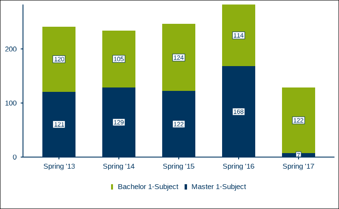
Next a more complex example, in which we additionally provide the
label for the y-axis, y_axis_label and a caption indicating
the source of the data, caption. By default, the caption
has the German prefix “Quelle:”, which we change to English
“Source:” using the parameter caption_prefix. We
also want to suppress the value label for Master students in the spring
term of 2017, because the value is so small. By default, labels for
values accounting for less than 4% of the total value are suppressed. In
this case, the seven students account for 7/(7+122) = 5.4% of the total
value, so we increase the value for filter_cutoff from the
default of 0.04 to 0.06.
# Create test values for all three mandatory variables (x_var, y_var, fill_var).
df_t1_ex2 <- tibble::tribble(
~term, ~students, ~degree,
"Spring '13", 120, "Bachelor 1-Subject",
"Spring '14", 105, "Bachelor 1-Subject",
"Spring '15", 124, "Bachelor 1-Subject",
"Spring '16", 114, "Bachelor 1-Subject",
"Spring '17", 122, "Bachelor 1-Subject",
"Spring '13", 121, "Master 1-Subject",
"Spring '14", 129, "Master 1-Subject",
"Spring '15", 122, "Master 1-Subject",
"Spring '16", 168, "Master 1-Subject",
"Spring '17", 7, "Master 1-Subject"
)
# Set values for parameters setting the y-axis title, captioning the source data
# and filtering small value labels (all labels below 6% of the stacked total).
RUBer::rub_plot_type_1(
df = df_t1_ex2,
x_var = term,
y_var = students,
fill_var = degree,
y_axis_label = stringr::str_wrap(
"Students (1st degree program, 1st and 2nd field of study)",
width = 35
),
caption = "Vignette example data",
caption_prefix = "Source:",
filter_cutoff = 0.06,
base_size = 14,
base_family = font_family
)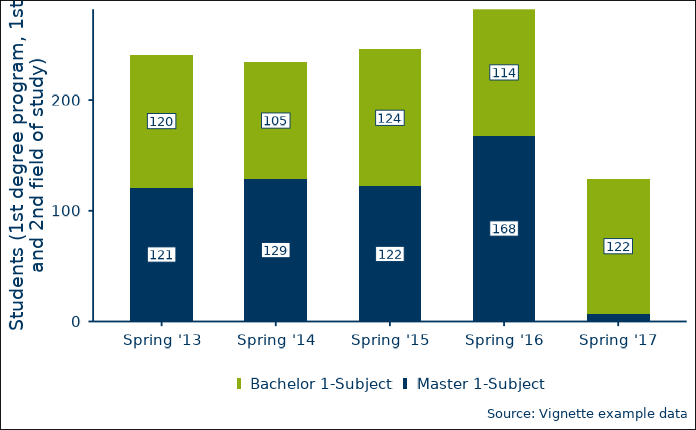
The third example adds even more parameters. You can facet the figure
by a discrete variable, facet_var, in order to make direct
comparisons between groups, e.g. different departments. You can also
change a figure’s default color with color, the default
font with base_family, and the size of all text elements
with base_size (see the documentation for
RUBer::theme_rub()).
# Create test values for all three mandatory variables (x_var, y_var, fill_var)
# and the optional facet variable (facet_var).
df_t1_ex3 <- tibble::tribble(
~term, ~students, ~degree, ~department,
"Spring '13", 120, "Bachelor 1-Subject", "Department of Mathematics and Statistics",
"Spring '14", 105, "Bachelor 1-Subject", "Department of Mathematics and Statistics",
"Spring '15", 124, "Bachelor 1-Subject", "Department of Mathematics and Statistics",
"Spring '16", 114, "Bachelor 1-Subject", "Department of Mathematics and Statistics",
"Spring '17", 122, "Bachelor 1-Subject", "Department of Mathematics and Statistics",
"Spring '13", 121, "Master 1-Subject", "Department of Mathematics and Statistics",
"Spring '14", 129, "Master 1-Subject", "Department of Mathematics and Statistics",
"Spring '15", 122, "Master 1-Subject", "Department of Mathematics and Statistics",
"Spring '16", 168, "Master 1-Subject", "Department of Mathematics and Statistics",
"Spring '17", 7, "Master 1-Subject", "Department of Mathematics and Statistics",
"Spring '13", 44, "Bachelor 1-Subject", "Department of Philosophy",
"Spring '14", 55, "Bachelor 1-Subject", "Department of Philosophy",
"Spring '15", 60, "Bachelor 1-Subject", "Department of Philosophy",
"Spring '16", 40, "Bachelor 1-Subject", "Department of Philosophy",
"Spring '17", 35, "Bachelor 1-Subject", "Department of Philosophy",
"Spring '13", 90, "Master 1-Subject", "Department of Philosophy",
"Spring '14", 95, "Master 1-Subject", "Department of Philosophy",
"Spring '15", 88, "Master 1-Subject", "Department of Philosophy",
"Spring '16", 85, "Master 1-Subject", "Department of Philosophy",
"Spring '17", 92, "Master 1-Subject", "Department of Philosophy"
)
# Facet by department, which effectively leads to two plots in one figure.
# The main color is changed from RUB blue to dark red, and the size is increased
# from 11 to 14.
rub_plot_type_1(
df = df_t1_ex3,
x_var = term,
y_var = students,
fill_var = degree,
y_axis_label = stringr::str_wrap(
string = "Students (1st degree program, 1st and 2nd field of study)",
width = 35
),
caption = "Vignette example data",
caption_prefix = "Source:",
filter_cutoff = 0.06,
facet_var = department,
color = RUB_colors["dark red"],
base_family = font_family,
base_size = 14
)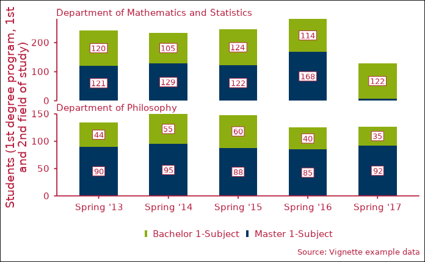
Figure Type 2 - Vertical stacked bar charts scaled to 100%
Figure type 2, plotted with RUBer::rub_plot_type_2, is
very similar to type 1. The main differences are that the y-axis uses a
percentage scale rather than an absolute one and that all stacked bars
are scaled to 100%. Like for figure type 1, three variable names are
mandatory: x_var for the x-coordinate, y_var
for the y-coordinate and fill_var for the fill variable,
which determines the groups to be stacked.
# Create test data for all three mandatory variables (x_var, y_var, fill_var)
df_t2_ex1 <- tibble::tribble(
~cohort_term, ~status_percentage, ~cohort_status,
"2. cohort term", 0.951, "Studying",
"2. cohort term", 0.003, "Changed subject",
"2. cohort term", 0, "Graduated",
"2. cohort term", 0.019, "Disenrolled without degree",
"2. cohort term", 0.027, "Dropped subject",
"4. cohort term", 0.89, "Studying",
"4. cohort term", 0.062, "Changed subject",
"4. cohort term", 0.002, "Graduated",
"4. cohort term", 0.02, "Disenrolled without degree",
"4. cohort term", 0.027, "Dropped subject",
"6. cohort term", 0.79, "Studying",
"6. cohort term", 0.15, "Changed subject",
"6. cohort term", 0.007, "Graduated",
"6. cohort term", 0.024, "Disenrolled without degree",
"6. cohort term", 0.028, "Dropped subject",
"8. cohort term", 0.612, "Studying",
"8. cohort term", 0.296, "Changed subject",
"8. cohort term", 0.01, "Graduated",
"8. cohort term", 0.027, "Disenrolled without degree",
"8. cohort term", 0.054, "Dropped subject"
)
rub_plot_type_2(
df = df_t2_ex1,
x_var = cohort_term,
y_var = status_percentage,
fill_var = cohort_status,
base_family = "sans"
)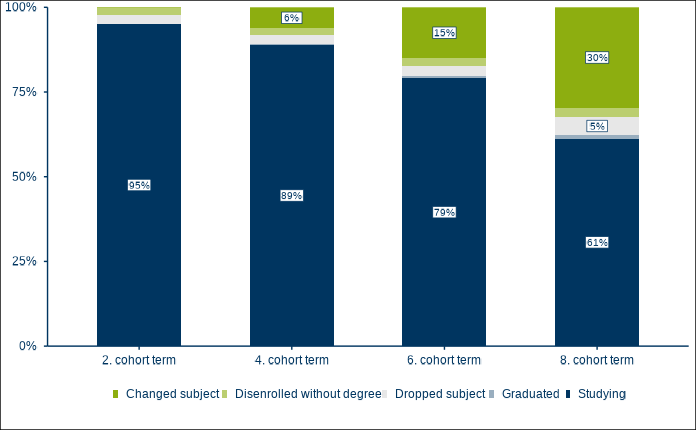
Now let us say we are unhappy with the default ordering of the
stacked bars, because we want the largest cohort group, those still
studying, on top. We can use the boolean parameter
fill_reverse to do just that. We also provide a discrete
facetting variable, facet_var, a text for
caption and caption_prefix, and a higher
threshhold for the filter_cutoff, leading to fewer labels
being displayed.
df_t2_ex2 <- tibble::tribble(
~cohort_term, ~status_percentage, ~cohort_status, ~cohort_label,
"2. cohort term", 0.9513551740, "Studying", "Bachelor 1-Subject: Starting cohort fall 2011 (n=222)",
"2. cohort term", 0.0029748098, "Changed subject", "Bachelor 1-Subject: Starting cohort fall 2011 (n=222)",
"2. cohort term", 0.0004673679, "Graduated", "Bachelor 1-Subject: Starting cohort fall 2011 (n=222)",
"2. cohort term", 0.0186648938, "Disenrolled without degree", "Bachelor 1-Subject: Starting cohort fall 2011 (n=222)",
"2. cohort term", 0.0265377545, "Dropped subject", "Bachelor 1-Subject: Starting cohort fall 2011 (n=222)",
"4. cohort term", 0.8896149868, "Studying", "Bachelor 1-Subject: Starting cohort fall 2011 (n=222)",
"4. cohort term", 0.0616919929, "Changed subject", "Bachelor 1-Subject: Starting cohort fall 2011 (n=222)",
"4. cohort term", 0.0016484686, "Graduated", "Bachelor 1-Subject: Starting cohort fall 2011 (n=222)",
"4. cohort term", 0.0201024499, "Disenrolled without degree", "Bachelor 1-Subject: Starting cohort fall 2011 (n=222)",
"4. cohort term", 0.0269421019, "Dropped subject", "Bachelor 1-Subject: Starting cohort fall 2011 (n=222)",
"6. cohort term", 0.7901183540, "Studying", "Bachelor 1-Subject: Starting cohort fall 2011 (n=222)",
"6. cohort term", 0.1502641318, "Changed subject", "Bachelor 1-Subject: Starting cohort fall 2011 (n=222)",
"6. cohort term", 0.0074548056, "Graduated", "Bachelor 1-Subject: Starting cohort fall 2011 (n=222)",
"6. cohort term", 0.0243490259, "Disenrolled without degree", "Bachelor 1-Subject: Starting cohort fall 2011 (n=222)",
"6. cohort term", 0.0278136827, "Dropped subject", "Bachelor 1-Subject: Starting cohort fall 2011 (n=222)",
"8. cohort term", 0.6115873010, "Studying", "Bachelor 1-Subject: Starting cohort fall 2011 (n=222)",
"8. cohort term", 0.2961468339, "Changed subject", "Bachelor 1-Subject: Starting cohort fall 2011 (n=222)",
"8. cohort term", 0.0104080044, "Graduated", "Bachelor 1-Subject: Starting cohort fall 2011 (n=222)",
"8. cohort term", 0.0274549015, "Disenrolled without degree", "Bachelor 1-Subject: Starting cohort fall 2011 (n=222)",
"8. cohort term", 0.0544029593, "Dropped subject", "Bachelor 1-Subject: Starting cohort fall 2011 (n=222)",
"2. cohort term", 0.769899396, "Studying", "Bachelor 1-Subject: Starting cohort fall 2012 (n=240)",
"2. cohort term", 0.173399178, "Changed subject", "Bachelor 1-Subject: Starting cohort fall 2012 (n=240)",
"2. cohort term", 0.034702328, "Graduated", "Bachelor 1-Subject: Starting cohort fall 2012 (n=240)",
"2. cohort term", 0.006062833, "Disenrolled without degree", "Bachelor 1-Subject: Starting cohort fall 2012 (n=240)",
"2. cohort term", 0.015936266, "Dropped subject", "Bachelor 1-Subject: Starting cohort fall 2012 (n=240)",
"4. cohort term", 0.769421630, "Studying", "Bachelor 1-Subject: Starting cohort fall 2012 (n=240)",
"4. cohort term", 0.173700319, "Changed subject", "Bachelor 1-Subject: Starting cohort fall 2012 (n=240)",
"4. cohort term", 0.034742910, "Graduated", "Bachelor 1-Subject: Starting cohort fall 2012 (n=240)",
"4. cohort term", 0.006156721, "Disenrolled without degree", "Bachelor 1-Subject: Starting cohort fall 2012 (n=240)",
"4. cohort term", 0.015978420, "Dropped subject", "Bachelor 1-Subject: Starting cohort fall 2012 (n=240)",
"6. cohort term", 0.667217426, "Studying", "Bachelor 1-Subject: Starting cohort fall 2012 (n=240)",
"6. cohort term", 0.228271544, "Changed subject", "Bachelor 1-Subject: Starting cohort fall 2012 (n=240)",
"6. cohort term", 0.065634578, "Graduated", "Bachelor 1-Subject: Starting cohort fall 2012 (n=240)",
"6. cohort term", 0.010729695, "Disenrolled without degree", "Bachelor 1-Subject: Starting cohort fall 2012 (n=240)",
"6. cohort term", 0.028146757, "Dropped subject", "Bachelor 1-Subject: Starting cohort fall 2012 (n=240)",
"8. cohort term", 0.511075289, "Studying", "Bachelor 1-Subject: Starting cohort fall 2012 (n=240)",
"8. cohort term", 0.353166732, "Changed subject", "Bachelor 1-Subject: Starting cohort fall 2012 (n=240)",
"8. cohort term", 0.073315208, "Graduated", "Bachelor 1-Subject: Starting cohort fall 2012 (n=240)",
"8. cohort term", 0.026374195, "Disenrolled without degree", "Bachelor 1-Subject: Starting cohort fall 2012 (n=240)",
"8. cohort term", 0.036068576, "Dropped subject", "Bachelor 1-Subject: Starting cohort fall 2012 (n=240)",
)
rub_plot_type_2(
df = df_t2_ex2,
x_var = cohort_term,
y_var = status_percentage,
fill_var = cohort_status,
facet_var = cohort_label,
filter_cutoff = 0.06,
caption = "Comparison of two fictitious cohorts",
caption_prefix = "Source:",
fill_reverse = TRUE,
base_size = 14,
base_family = font_family
)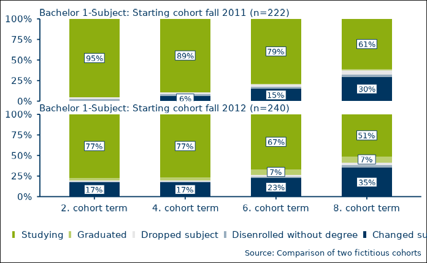
Figure Type 3 - Horizontal stacked bar charts scaled to 100%
Figure type 3, plotted with RUBer::rub_plot_type_3, is
very similar to figure type 2, with the exception that the stacked bar
charts are plotted horizontally. As with the first two figure types,
three variable names are mandatory: x_var for the
x-coordinate, y_var for the y-coordinate and
fill_var for the fill variable, which determines the groups
to be stacked.
# Create test data for all three mandatory variables (x_var, y_var,
# fill_var)
df_t3_ex1 <- tibble::tribble(
~survey_group, ~item_value, ~item_value_percentage,
"Bachelor 1-Subject (n=400)", "Exceeded prescribed period of study", 0.3,
"Bachelor 1-Subject (n=400)", "Within prescribed period of study", 0.7,
"SG Bachelor 1-Subject (n=669)", "Exceeded prescribed period of study", 0.11,
"SG Bachelor 1-Subject (n=669)", "Within prescribed period of study", 0.89
)
rub_plot_type_3(
df = df_t3_ex1,
x_var = item_value_percentage,
y_var = survey_group,
fill_var = item_value,
base_family = "sans"
)
#> Warning in dev_string_widths_c(as.character(strings), as.character(family), :
#> devEMF: your system substituted font family 'DejaVu Sans' when you requested
#> 'sans_systemfonts'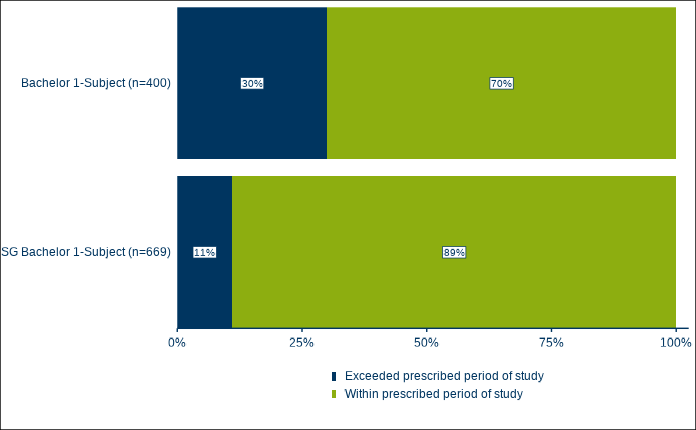
The second example once again adds a facetting variable,
fill_var, for plotting direct comparisons between groups.
We also use caption, caption_prefix, a
filter_cutoff that suppresses all values below 20%, and
increase the text size to 14.
df_t3_ex2 <- tibble::tribble(
~survey_group, ~item_value, ~item_value_percentage, ~degree,
"Bachelor 1-Subject (n=400)", "Exceeded prescribed period of study", 0.30, "Bachelor 1-Subject",
"Bachelor 1-Subject (n=400)", "Within prescribed period of study", 0.60, "Bachelor 1-Subject",
"SG Bachelor 1-Subject (n=726)", "Exceeded prescribed period of study", 0.1122486, "Bachelor 1-Subject",
"SG Bachelor 1-Subject (n=726)", "Within prescribed period of study", 0.8877514, "Bachelor 1-Subject",
"Master 1-Subject (n=369)", "Exceeded prescribed period of study", 0.1416009, "Master 1-Subject",
"Master 1-Subject (n=369)", "Within prescribed period of study", 0.8583991, "Master 1-Subject",
"SG Master 1-Subject (n=669)", "Exceeded prescribed period of study", 0.4417682, "Master 1-Subject",
"SG Master 1-Subject (n=669)", "Within prescribed period of study", 0.5582318, "Master 1-Subject"
)
rub_plot_type_3(
df = df_t3_ex2,
x_var = item_value_percentage,
y_var = survey_group,
fill_var = item_value,
facet_var = degree,
caption = "Graduate survey 2017/18",
caption_prefix = "Source:",
filter_cutoff = 0.20,
base_size = 14,
base_family = font_family
)
#> Warning in dev_string_widths_c(as.character(strings), as.character(family), :
#> devEMF: your system substituted font family 'DejaVu Sans' when you requested
#> 'DejaVu Sans_systemfonts'Changing ordering
In the last example above, the ordering of the fill variable,
item_value, is going from bad (“Exceeded prescribed period of study”) to
good (“Within prescribed period of study”). This is because, by default,
the fill variable will be ordered alphabetically if not a factor. So
what if we want the fill variable ordered the other way? We can use the
optional boolean parameter fill_reverse to change the
ordering of the the fill variable and of the legend.
# Reversed fill, reversed legend
rub_plot_type_3(
df = df_t3_ex2,
x_var = item_value_percentage,
y_var = survey_group,
fill_var = item_value,
facet_var = degree,
caption = "Graduate survey 2017/18",
caption_prefix = "Source:",
filter_cutoff = 0.20,
base_size = 14,
base_family = font_family,
fill_reverse = TRUE
)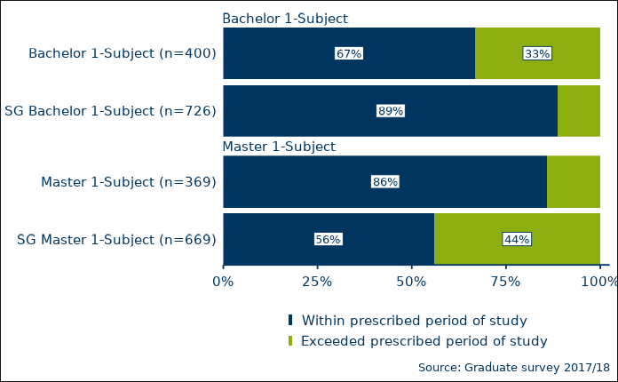
If we simply want to reverse the order of the legend items, without
actually reversing the order of the stacked bar segments, we can use the
optional parameter legend_reverse instead.
# Reversed legend
rub_plot_type_3(
df = df_t3_ex2,
x_var = item_value_percentage,
y_var = survey_group,
fill_var = item_value,
facet_var = degree,
caption = "Graduate survey 2017/18",
caption_prefix = "Source:",
filter_cutoff = 0.20,
base_size = 14,
base_family = font_family,
legend_reverse = TRUE
)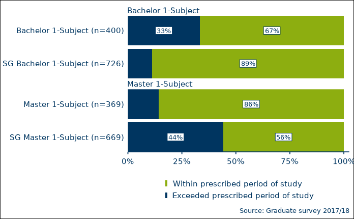
What if we want to use a custom ordering of the fill variable? Consider the following example:
df_t3_ex4 <- tibble::tribble(
~survey_group, ~item_value, ~item_value_percentage, ~degree,
"Bachelor 1-Subject (n=400)", "Exceeded prescribed period of study", 0.30, "Bachelor 1-Subject",
"Bachelor 1-Subject (n=400)", "Within prescribed period of study", 0.60, "Bachelor 1-Subject",
"Bachelor 1-Subject (n=400)", "Unknown", 0.10, "Bachelor 1-Subject",
"SG Bachelor 1-Subject (n=726)", "Exceeded prescribed period of study", 0.11, "Bachelor 1-Subject",
"SG Bachelor 1-Subject (n=726)", "Within prescribed period of study", 0.77, "Bachelor 1-Subject",
"SG Bachelor 1-Subject (n=726)", "Unknown", 0.12, "Bachelor 1-Subject",
"Master 1-Subject (n=369)", "Exceeded prescribed period of study", 0.12, "Master 1-Subject",
"Master 1-Subject (n=369)", "Within prescribed period of study", 0.83, "Master 1-Subject",
"Master 1-Subject (n=369)", "Unknown", 0.04, "Master 1-Subject",
"SG Master 1-Subject (n=669)", "Exceeded prescribed period of study", 0.44, "Master 1-Subject",
"SG Master 1-Subject (n=669)", "Within prescribed period of study", 0.50, "Master 1-Subject",
"SG Master 1-Subject (n=669)", "Unknown", 0.05, "Master 1-Subject"
)
rub_plot_type_3(
df = df_t3_ex4,
x_var = item_value_percentage,
y_var = survey_group,
fill_var = item_value,
facet_var = degree,
caption = "Graduate survey 2017/18",
caption_prefix = "Source:",
base_size = 14,
base_family = font_family
)
Here, we neither want alphabetic ordering, nor its reverse. Instead,
we would prefer an alphabetic ordering with the item_value “Unknown”
always coming last. For this, we can explicitly turn the
fill_var into a factor with a predetermined ordering. The
plotting function will respect this ordering.
# Take the data from previous example
df_t3_ex5 <- df_t3_ex4
# Turn the column "item_value" into a factor
df_t3_ex5[["item_value"]] <- factor(df_t3_ex5[["item_value"]])
# Examine the levels, default is alphabetic ordering
levels(df_t3_ex5[["item_value"]])
#> [1] "Exceeded prescribed period of study" "Unknown"
#> [3] "Within prescribed period of study"
# Make sure that level unknown always comes last
df_t3_ex5[["item_value"]] <- forcats::fct_relevel(
df_t3_ex5[["item_value"]],
c("Unknown"),
after = Inf
)
# Check new ordering
levels(df_t3_ex5[["item_value"]])
#> [1] "Exceeded prescribed period of study" "Within prescribed period of study"
#> [3] "Unknown"
# Plot
rub_plot_type_3(
df = df_t3_ex5,
x_var = item_value_percentage,
y_var = survey_group,
fill_var = item_value,
facet_var = degree,
caption = "Graduate survey 2017/18",
caption_prefix = "Source:",
base_size = 14,
base_family = font_family
)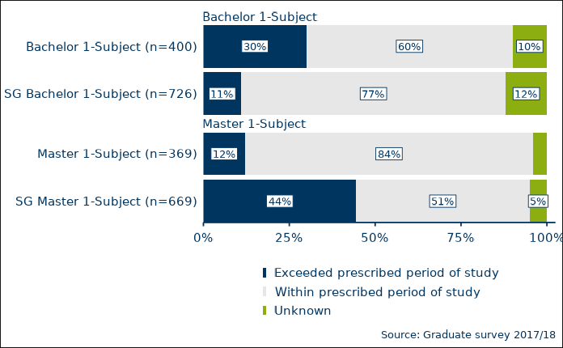
Figure Type 4 - Line Charts
# Create test data for all three mandatory variables (x_var, y_var,
# group_var)
df_t4_ex1 <- tibble::tribble(
~term, ~students, ~degree,
"Spring '13", 110, "Bachelor 1-Subject",
"Spring '14", 105, "Bachelor 1-Subject",
"Spring '15", 124, "Bachelor 1-Subject",
"Spring '16", 114, "Bachelor 1-Subject",
"Spring '17", 140, "Bachelor 1-Subject",
"Spring '13", 121, "Master 1-Subject",
"Spring '14", 129, "Master 1-Subject",
"Spring '15", 135, "Master 1-Subject",
"Spring '16", 168, "Master 1-Subject",
"Spring '17", 7, "Master 1-Subject"
)
rub_plot_type_4(
df = df_t4_ex1,
x_var = term,
y_var = students,
group_var = degree,
y_axis_label = stringr::str_wrap(
string = "Students (1st degree program, 1st and 2nd field of study)",
width = 35
),
caption = "Vignette example data",
caption_prefix = "Source:",
base_family = "sans"
)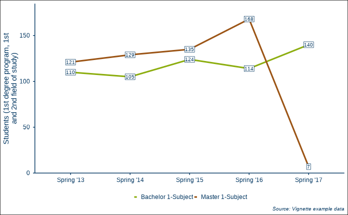
Figure Type 1 and 4 - Vertical Stacked Bar Charts Combined with Line Charts
df_t1_and_t4_ex1 <- tibble::tribble(
~term, ~students, ~degree, ~group, ~figure_type_id,
"Spring '13", 120, "Bachelor 1-Subject", NA, 1L,
"Spring '14", 105, "Bachelor 1-Subject", NA, 1L,
"Spring '15", 124, "Bachelor 1-Subject", NA, 1L,
"Spring '16", 114, "Bachelor 1-Subject", NA, 1L,
"Spring '17", 122, "Bachelor 1-Subject", NA, 1L,
"Spring '13", 121, "Master 1-Subject", NA, 1L,
"Spring '14", 129, "Master 1-Subject", NA, 1L,
"Spring '15", 122, "Master 1-Subject", NA, 1L,
"Spring '16", 168, "Master 1-Subject", NA, 1L,
"Spring '17", 7, "Master 1-Subject", NA, 1L,
"Spring '13", 20, NA, "Freshman students", 4L,
"Spring '14", 30, NA, "Freshman students", 4L,
"Spring '15", 41, NA, "Freshman students", 4L,
"Spring '16", 27, NA, "Freshman students", 4L,
"Spring '17", 35, NA, "Freshman students", 4L
)
rub_plot_type_1_and_4(
df = df_t1_and_t4_ex1,
x_var = term,
y_var = students,
fill_var = degree,
group_var = group,
base_family = "sans"
)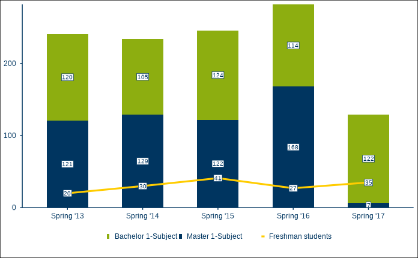
For experienced ggplot2 users
The level of flexibility and customizability achievable through the plotting functions of RUBer are limited. At some point, it makes more sense to properly learn ggplot2 and to use the individual components directly (scales, colors, etc.). See the resources section for help on getting started with ggplot2.
Applying the RUB Theme
The function theme_rub is a normal
ggplot2::theme() function based on
ggplot2::theme_minimal(). You can use it for any ggplot
object:
# Base plot
ggplot2::ggplot(
data = mtcars,
ggplot2::aes(
x = mpg,
y = disp,
color = as.factor(carb)
)
) +
ggplot2::geom_point() +
theme_rub(
base_family = font_family
)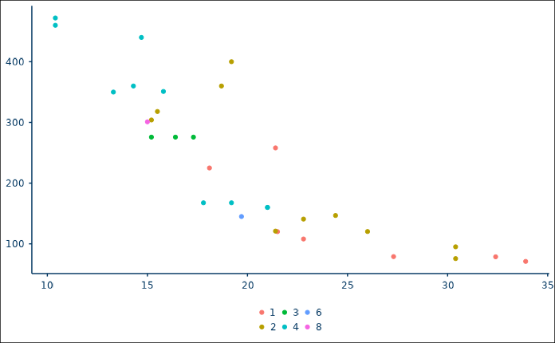
Scale Functions
The RUB palettes are used through corresponding scale functions.
Currently, (1) scale_color_rub (a wrapper for
ggplot2::discrete_scale() if discrete, or for
ggplot2::scale_color_gradientn() if continuous) and (2)
scale_fill_rub (a wrapper for
ggplot2::discrete_scale() if discrete, or for
ggplot2::scale_fill_gradientn() if continuous) are
implemented. Use these scale functions to ensure that appropriate RUB
palettes and colors are used.
# Basic themed plot with discrete scale function
ggplot2::ggplot(
data = mtcars,
ggplot2::aes(
x = mpg,
y = disp,
color = as.factor(carb)
)
) +
ggplot2::geom_point(
size = 3
) +
scale_color_rub(
palette = "discrete"
) +
theme_rub(
base_size = 14,
base_family = font_family
)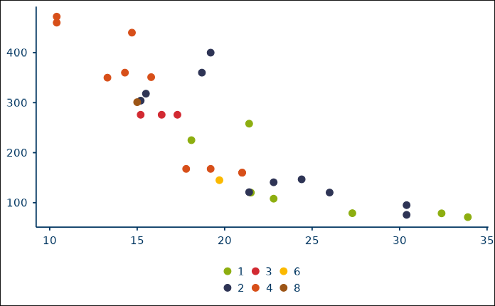
# By default, the theme shows no axis labels and no legend title. Use the
# boolean parameters x_axis_label, y_axis_label and legend_title to activate
# them.
ggplot2::ggplot(
data = mtcars,
ggplot2::aes(
x = mpg,
y = disp,
color = as.factor(carb)
)
) +
ggplot2::geom_point(
size = 3
) +
scale_color_rub(
palette = "discrete"
) +
theme_rub(
base_size = 14,
base_family = font_family,
x_axis_label = TRUE,
y_axis_label = TRUE,
legend_title = FALSE
)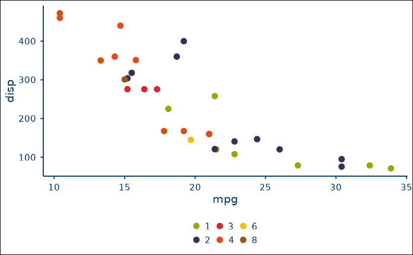
# Reverse the color palette by setting reverse to TRUE in the scale function
ggplot2::ggplot(
data = mtcars,
ggplot2::aes(
x = mpg,
y = disp,
color = as.factor(carb)
)
) +
ggplot2::geom_point(
size = 3
) +
scale_color_rub(
palette = "discrete",
reverse = TRUE
) +
theme_rub(
base_size = 14,
base_family = font_family,
x_axis_label = TRUE,
y_axis_label = TRUE,
legend_title = FALSE
)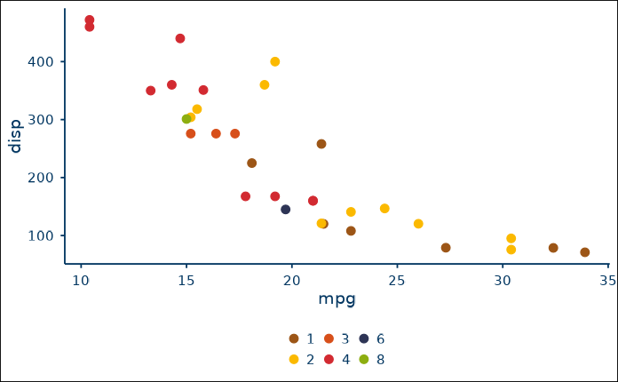
Continuous scales are used by setting discrete to
FALSE and by providing the name of a continuous palette to
palette (see vignette("RUB_colors")).
# Basic plot with continuous scale function
ggplot2::ggplot(
data = mtcars,
ggplot2::aes(
x = mpg,
y = disp,
color = disp
)
) +
ggplot2::geom_point(
size = 3
) +
scale_color_rub(
palette = "continuous",
discrete = FALSE
) +
theme_rub(
base_size = 14,
base_family = font_family,
x_axis_label = TRUE,
y_axis_label = TRUE,
legend_title = TRUE
)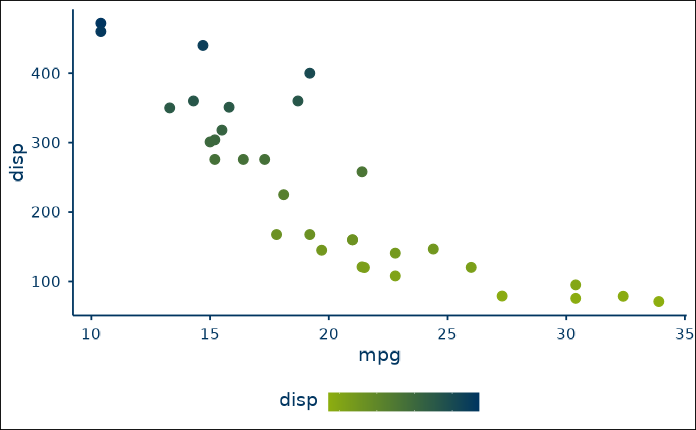
# Reverse the color palette by setting reverse to TRUE in the scale function
ggplot2::ggplot(
data = mtcars,
ggplot2::aes(
x = mpg,
y = disp,
color = disp
)
) +
ggplot2::geom_point(
size = 3
) +
scale_color_rub(
palette = "continuous",
discrete = FALSE,
reverse = TRUE
) +
theme_rub(
base_size = 14,
base_family = font_family,
x_axis_label = TRUE,
y_axis_label = TRUE,
legend_title = TRUE
)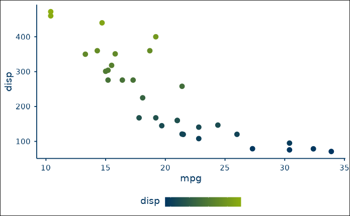
# Example of continuous_diverging palette
ggplot2::ggplot(
data = mtcars,
ggplot2::aes(
x = mpg,
y = disp,
color = disp
)
) +
ggplot2::geom_point(
size = 3
) +
scale_color_rub(
palette = "continuous_diverging",
discrete = FALSE
) +
theme_rub(
base_size = 14,
base_family = font_family,
x_axis_label = TRUE,
y_axis_label = TRUE,
legend_title = TRUE
)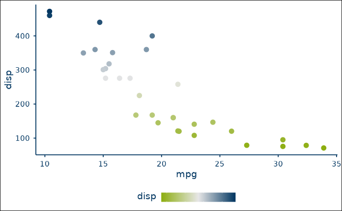
ggplot2::ggplot(
data = mtcars,
ggplot2::aes(
x = as.factor(gear),
fill = as.factor(vs)
)
) +
ggplot2::geom_bar() +
scale_fill_rub(
palette = "discrete_2"
) +
theme_rub(
base_size = 14,
base_family = font_family,
x_axis_label = TRUE,
y_axis_label = TRUE,
legend_title = TRUE
)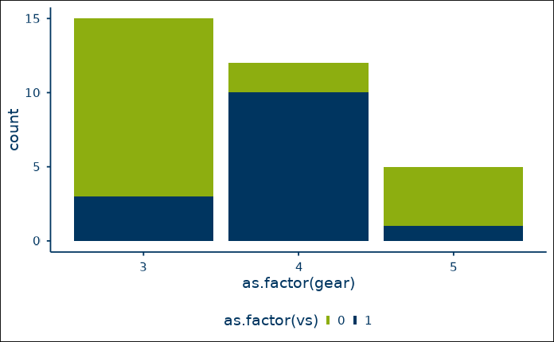
# Turn off showtext after plotting
showtext::showtext_auto(FALSE)Resources for learning ggplot2
Books
- The Data visualisation and Graphics for communication chapters in R for Data Science by Garrett Grolemund and Hadley Wickham,
- The R Graphics Cookbook, 2nd Edition by Winston Chang,
- Data Visualization - A practical introduction by Kieran Healy,
- ggplot2 - Elegant Graphics for Data Analysis, 3rd Edition by Hadley Wickham.
Presentations and tutorials
- Designing ggplots - making clear figures that communicate by Malcolm Barrett,
- A ggplot2 Tutorial for Beautiful Plotting in R by Cédric Scherer,
- Step-by-step examples of building publication-quality figures in ggplot2 by Claus Wilke,
- A Gentle Guide to the Grammar of Graphics with ggplot2 by Garrick Aden-Buie.